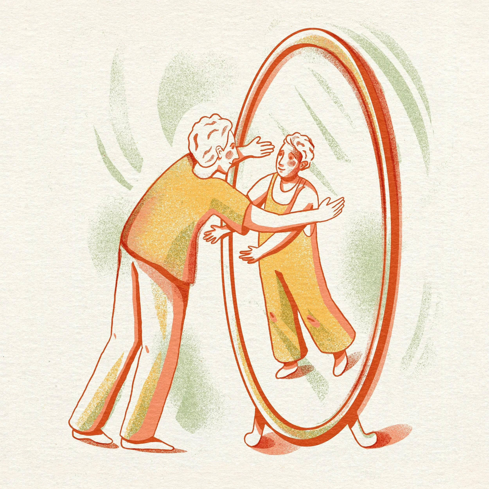
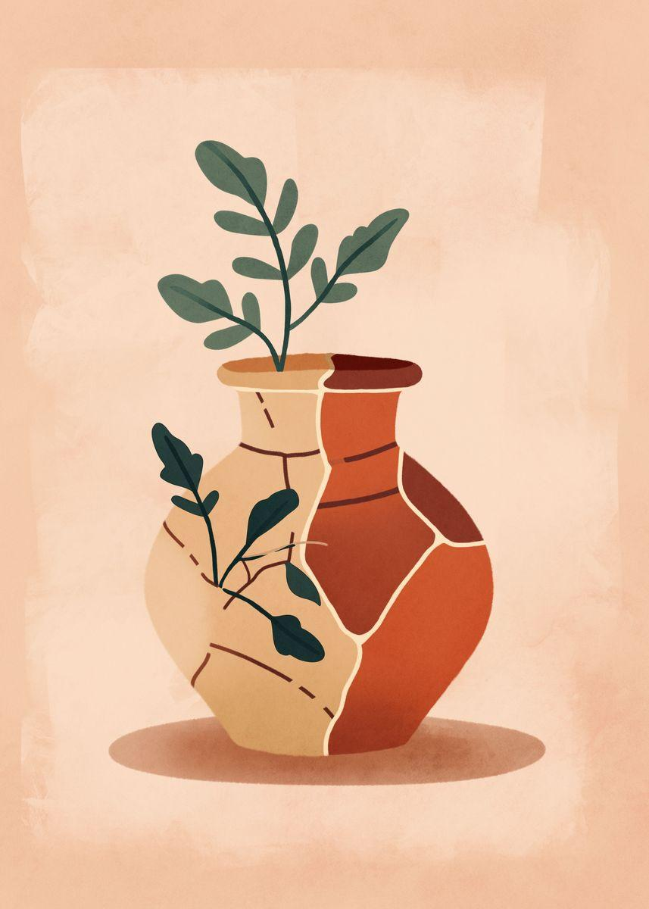
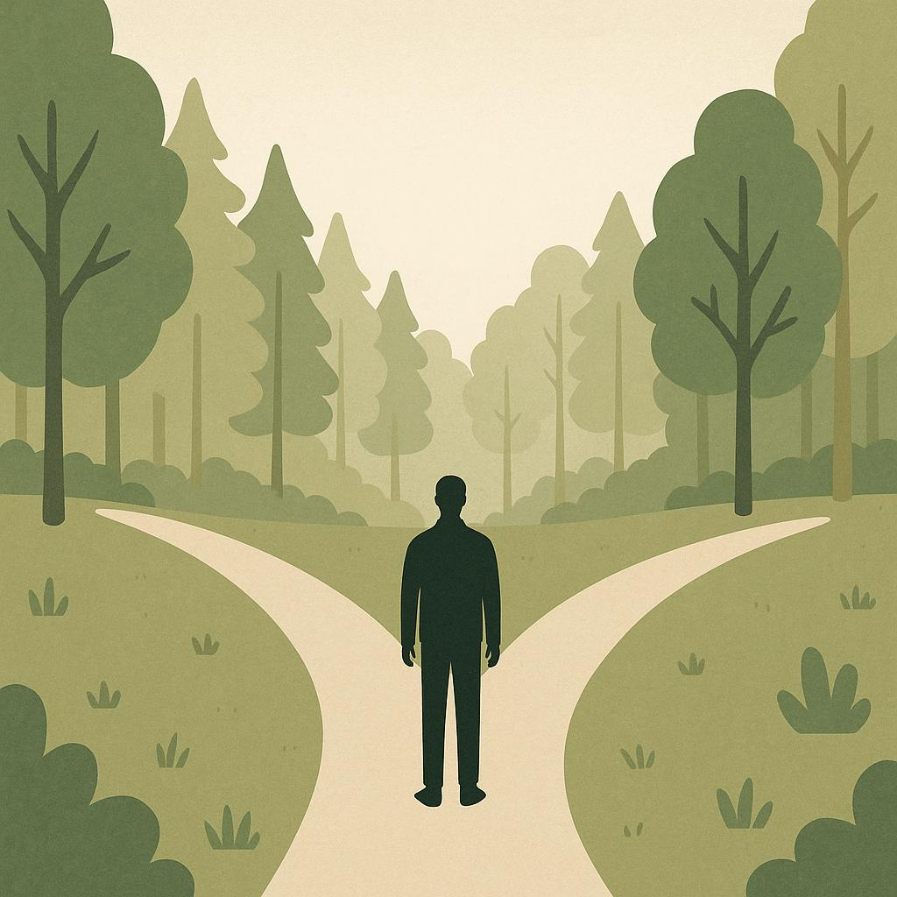

Prendre du recul
Reconnaître ce qui se passe, sans laisser le stress décider de tout.
ONSONG · PROJET 01
Des chansons pour retrouver de l’espace quand tout semble peser trop lourd.
Le stress ne disparaît pas toujours sur commande. Mais nous pouvons apprendre à regarder une situation autrement, à distinguer ce qui dépend de nous et à choisir notre prochaine action.
Découvrir les 5 chansonsL’IDÉE DU PROJET
Reconnaître ce qui se passe, sans laisser le stress décider de tout.
Distinguer ce que l’on contrôle de ce que l’on ne contrôle pas.
Choisir une prochaine étape concrète, même petite.
LES CHANSONS
Remplacez les titres, les textes et les noms d’images ci-dessous par le contenu final. Chaque carte pointe vers sa propre page de chanson.
 IMAGE 01
IMAGE 01
CHANSON 01
Tout ne dépend pas de nous. Cette chanson invite à reconnaître ce qui échappe à notre contrôle et à préserver son énergie pour ce qui peut encore changer.
Découvrir la chansonCHANSON 02
Une autre façon de voir les choses peut ouvrir de nouvelles possibilités. L’objectif n’est pas de nier la difficulté, mais de choisir la manière d’y répondre.
Découvrir la chanson
IMAGE 03CHANSON 03
Apprendre à se parler avec plus de justesse : reconnaître ses difficultés sans se rabaisser, tout en gardant la possibilité d’agir et de progresser.
Découvrir la chanson
IMAGE 04CHANSON 04
Faire une erreur décrit un événement, pas toute une personne. Cette chanson aide à distinguer ce qui s’est passé de la valeur que l’on s’accorde.
Découvrir la chanson
IMAGE 05CHANSON 05
Quand on se sent impuissant, on peut commencer par une décision. Une petite action choisie peut aider à retrouver le sentiment d’avoir une prise sur la situation.
Découvrir la chanson